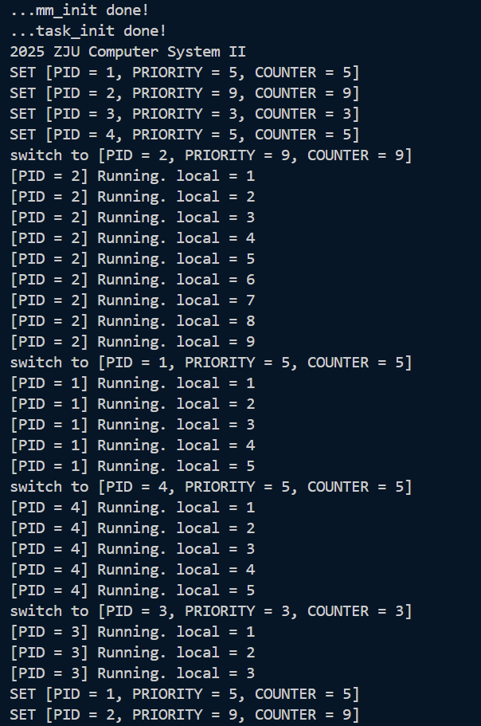
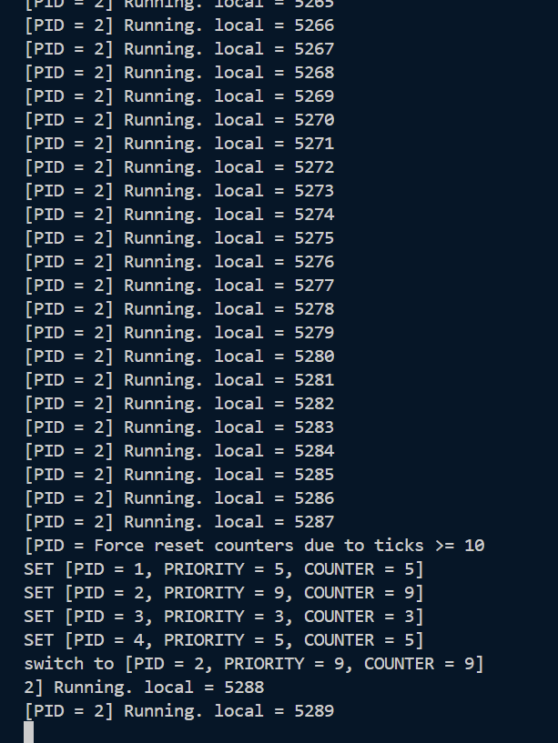

Lab 6 实验报告
1 实验目的
了解线程概念以及如何使用时钟中断来进行线程调度。
了解线程切换原理并实现线程切换。
2 试验过程
问题 1：执行make run的输出与文档不一致
解决方案：最开始不一致是出发了异常：
2025 ZJU Computer System II
[S] Supervisor timer interrupt
Unknown exception: scause = 5, sepc = 8020052c
这是因为我没有调用task_init函数（但是文档也没写啊qaq）。
修改后出现第二次不一致，输出变成：
...mm_init done!
...task_init done!
2025 ZJU Computer System II
[S] Supervisor timer interrupt
SET [PID = 1, PRIORITY = 5, COUNTER = 5]
SET [PID = 2, PRIORITY = 9, COUNTER = 9]
SET [PID = 3, PRIORITY = 3, COUNTER = 3]
SET [PID = 4, PRIORITY = 5, COUNTER = 5]
switch to [PID = 2, PRIORITY = 9, COUNTER = 9]
[PID = 2] Running. local = 1
[S] Supervisor timer interrupt
[PID = 2] Running. local = 2
[S] Supervisor timer interrupt
[PID = 2] Running. local = 3
[S] Supervisor timer interrupt
[PID = 2] Running. local = 4
即每次时钟中断都会输出[S] Supervisor timer interrupt，而文档中没有。把这行打印语句注释掉即可。（但是文档里也没写呀qaq）
最终效果：

与文档完全一致。
3 思考题
1. 在 RV64 中共有 32 个通用寄存器，为什么 __switch_to 中只需保存 14 个？
sp、s0-s11属于Callee-saved寄存器，__switch_to作为被调用者需要保存他们。ra寄存器保存了__switch_to的返回地址，也需要保存（否则切换回这个线程的时候会跳转到错误地址）。其他寄存器如a0-a7、t0-t6属于Caller-saved寄存器，不需要保存，因为调用者负责保存它们的值。
因此只需要保存sp、s0-s11和ra，共14个寄存器。
2. 线程间什么是共享的，什么是独有的？具体体现在本次实验中是哪些？
- 共享：
- 虚拟地址空间：包括代码段、数据段和堆栈段。所有线程共享同一个内核地址空间。
- 打开的文件
- 信号处理函数、PID等
- 独有：
- 栈：每个线程都有独立的栈空间
- 线程上下文：包括PC、SP、通用寄存器、状态寄存器等
- 线程属性：如线程ID、优先级、时间片等
在本次实验中：
- 共享：
- 内核代码：所有线程都运行在同一个内核代码段中
- 全局变量：比如
proc.c中定义的task数组、current指针、idle指针等 - 内核地址空间
- 独有：
- 线程栈：在
task_init中为每个线程分配独立的栈空间 - 线程上下文：在
struct thread_struct中保存每个线程的ra、sp和s0-s11寄存器值 - 线程属性：如
task_struct中的pid、priority、counter等
- 线程栈：在
3. 当线程第一次调用 __switch_to 时，其 ra 寄存器恢复的返回地址是 __dummy。线程在之后对 __switch_to 的调用中，ra 寄存器保存 / 恢复的函数返回地址是什么呢？请使用 gdb 追踪一次完整的线程切换流程（附上你认为关键的截图），并特别关注 pc、ra 寄存器、sepc CSR 的变化。
在第一次执行到__switch_to入口处时pc、ra和sp的值如下图所示：

pc指向__switch_to函数的入口地址。
当线程第一次调用 __switch_to 时，其 ra 寄存器恢复的返回地址是 __dummy。

第一次调用__switch_to是从idle线程切换到PID=2的线程，ra寄存器保存了__dummy的地址。
之后依次切换到PID=1、4、3，的线程时ra都是__dummy的地址。

当线程切换回PID=2时，ra恢复为switch_to+36，即上次从PID=2切换出去时（switch_to+32）的下一条指令地址（+4）。

4. 尝试回答这些问题。第 2 题的结果对这些问题应当很有帮助：
a. 为什么在 __dummy 中使用 #!asm sret 而不是 #!asm ret？
__dummy的实现方式是
__dummy:
# 1. 将 dummy_task 的地址加载到 t0
la t0, dummy_task
# 2. 将 t0 的值写入 sepc 寄存器
csrw sepc, t0
# 3. 使用sret跳转到 dummy_task
sret
将sepc设置为dummy_task的地址，使用sret指令跳转到sepc指向的地址。而ret指令是跳转到ra指向的地址，与涉及不符。
而且sret会将sstatus寄存器的SIE位恢复，重新开启中断，使系统能够进行后续的调度。如果使用ret，则无法重新触发中断，无法进行后续的调度。
b. 为什么在 __switch_to 中使用 #!asm ret 而不是 #!asm sret？
__switch_to函数是被c语言函数switch_to调用的，它的返回地址保存在ra寄存器中，所以需要使用ret指令跳转到。
sret指令用于跳转到sepc指向的地址，会直接跳过switch_to函数的返回地址，导致程序无法正确返回到调用switch_to的地方。
c. 为什么我们不直接在 start_kernel 中调用 schedule 进行调度，而是要把这件事交给第一次时钟中断呢？请尝试直接调用 schedule 观察现象。在中断发生时，有哪些重要的 CSR 发生了变化？
线程调度需要依赖中断机制来保存上下文，如果在start_kernel中直接调用schedule，会导致当前线程的上下文没有被保存。
中断发生时，以下CSR会发生变化：
sepc：保存中断发生时的程序计数器（返回地址）scause：保存中断的原因sstatus：保存中断前的状态寄存器
如果直接调用schedule，会导致这些CSR没有被正确设置，引起异常。

scause = 8 代表 Environment call from U-mode（用户态环境调用）
直接调用schedule会导致sstatus没有被正确设置，然后sret会返回U态，然后再执行ecall时就会触发权限异常。
5. dummy_task 的注释中提到了 priority 为 1 时的特殊情况。请解释为什么 priority 为 1 时，如果去除对 counter 的特殊处理，会导致信息无法打印（即，为什么线程可见的 counter 永远为 1）？
如果priority为1时不进行特殊处理，current->counter会被设置为1，中断发生时，do_timer会将current->counter减1，变为0，然后调用schedule进行调度。schedule发现counter为0，会重新设置counter为priority的值，即1。这样每次中断后，counter都会被重置为1，导致线程看到的counter永远是1。dummy_task看不到counter的变化（current->counter != prev_cnt始终为假），因此无法打印信息。
6. 阅读并理解 arch/riscv/kernel/mm.c。为什么在准备工程中，我们不能直接将 sp 设置为 _ekernel 加上 4 KiB 偏移量？实际上，如果仍然保持这种设置方式，会发现内核无法正常启动。你的回答应当能够解释这一现象。
如果仍然保持这种方式，内核启动时的栈空间位于[_ekernel, _ekernel + 4KiB)，然后调用mm_init函数会将_ekernel之后直到PHY_END的物理内存初始化，这个过程会覆写刚才分配的栈空间，导致mm_init函数的栈空间被破坏（比如返回地址被memset覆写为0xfa），从而导致内核无法正常启动。
lab6链接示意图：
┌──────────────┐◄─── _skernel, _start, 0x80200000
│ .text │
├──────────────┤
│ .rodata │
├──────────────┤
│ .data │
├──────────────┤
│ .bss.stack │
│ (4KiB) │
├──────────────┤◄─── _sbss (sp 初始值)
│ .bss │
├──────────────┤◄─── _ekernel
│ │
│ Free Memory │ <--- mm_init 初始化的区域
│ ... │
└──────────────┘
7. 为什么线程的切换要在S态进行而不能在U态进行，如果在U态会有什么后果？
- 原因：
- 权限限制：线程切换涉及对CPU状态的保存与恢复，需要访问特权寄存器（如
sstatus）和执行特权指令（如sret）。U态没有足够的权限来执行这些操作。 - 内核内存保护：线程的上下文（
thread_struct）、内核栈等结构储存在内核空间的内存中。为了系统安全，U态程序无法直接访问内核空间的内存。 - 中断控制：线程切换通常发生在系统调用或中断处理过程中，这些操作都在S态下进行。
- 权限限制：线程切换涉及对CPU状态的保存与恢复，需要访问特权寄存器（如
- 后果：
- 权限错误：如果尝试在U态进行线程切换，会因为权限不足而导致异常或错误。
- 系统崩溃：由于无法正确保存和恢复线程上下文，可能导致系统状态混乱，最终导致系统崩溃。
- 安全漏洞：如果U态程序能够进行线程切换，可能会导致恶意程序修改调度逻辑，剥夺其他线程的执行机会。
8. 我们本次lab是在所有线程的时间片都消耗为0后再进行设置和调度，如果我们改成每运行减少10次之后就重新设置与调度。会出现什么问题？
如果改成每运行减少10次之后就重新设置与调度，priority大的线程的counter会优先减小然后再充满，导致系统一直运行高优先级的线程，priority小的线程可能长时间得不到调度机会。
9. （bonus）试着按照思考题8的问题修改你的代码，用运行结果来展示你上一条的答案（本bonus仅在本次实验中有效，不会溢出到其他实验）

如图所示，PID=2的线程（优先级最高）一直在运行，在时间片减小10次重新设置和调度的情况下，运行的仍然是PID=2的线程，其他线程没有机会运行。
10. 本次实验是最后一次软件实验，你有什么想说的话吗，不记录分数，纯属用于吐槽，可以是助教工作，实验设计，实验流程，实验环境等等。
思考题好多。这个问题和心得体会是不是有点重复？
4 心得体会
见思考题10。